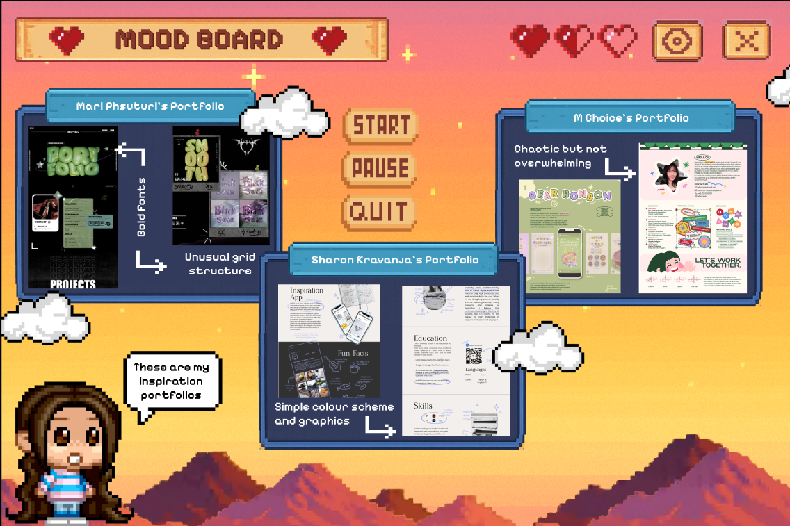
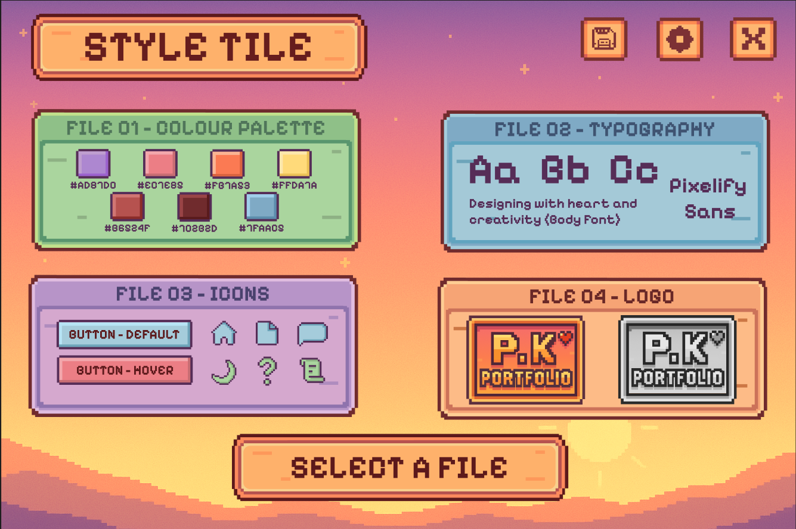
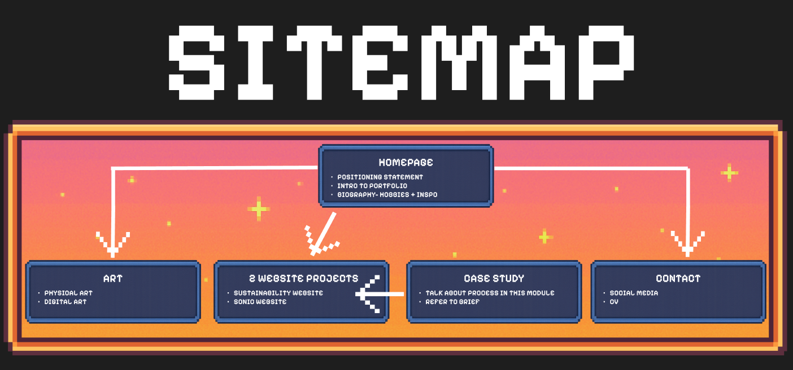
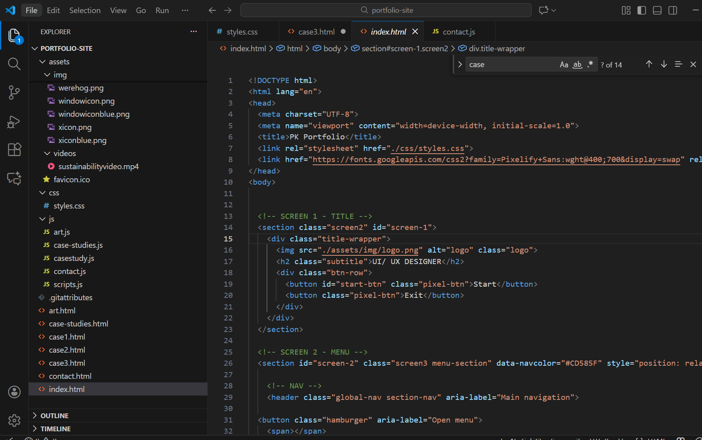
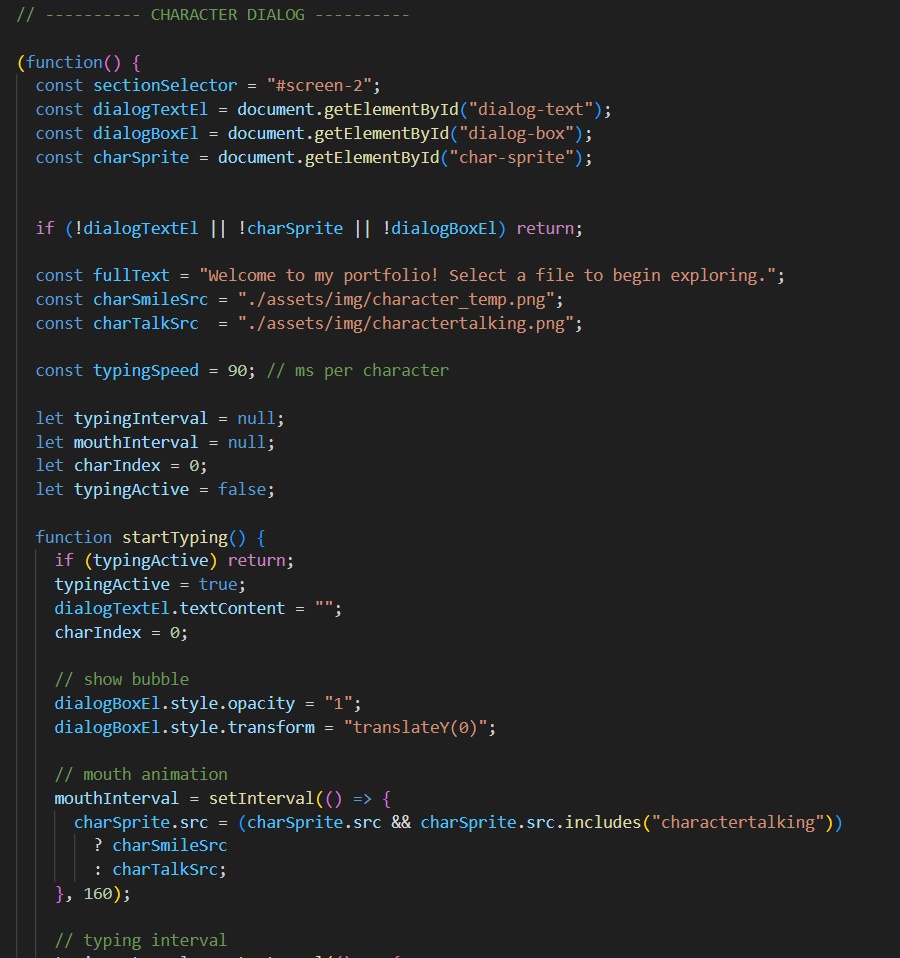

What was it?
Reflective case study focusing on how I designed and developed my personal portfolio. This portfolio is an embodiment of the work I have created and how my skills have evolved over the years as a designer and coder. It is also an area where I can showcase my love for my favourite hobby, art, and with this porfolio I can display my work for me and others to enjoy.
- Module: Working in a Digital World
- Tools: VSCode, Figma, Photoshop
- Date: 2025
The Challenge
The aim of this project was to create a professional digital portfolio that communicated both my technical and creative abilities as a Web and User Experience Designer. I wanted the site to reflect my personality, interests and love for video game art, while still presenting my work in a clear, structured and professional way. The main challenge was balancing creativity with usability, ensuring that the design remained engaging without becoming cluttered or difficult to navigate.
Design Process
Moodboard & Inspiration
My design direction was heavily inspired by retro and indie games such as Stardew Valley and Undertale. These references helped shape my colour palette, typography and overall aesthetic, blending nostalgia, soft earthy and pastel tones and playful digital elements that represent my creative identity.
Wireframes

I created a series of sketches to experiment with layout ideas, navigation styles and content hierarchy. These early drawings helped me visualise user flow and decide how to present my case studies and personal information in a clear and visually balanced way before starting the build in code.
Development Process
Coding
The website was hand-coded using HTML and CSS in Visual Studio Code. I experimented with unique visual elements, hover effects and layouts which later became a challenge when making the site responsive. Testing on different screen sizes highlighted the importance of flexible design and accessibility.
I experimented a lot with JavaScript in particular to help my elements come to life, for example with my character. Having her just displayed on the page would have been a waste so, making that talking animation was a must. Eventhough it is a short moment, it took a lot of research and code to make it happen and I am proud how it came out.
Testing

Final Design & Visual Style
Final Design
The final visual style features soft greens, warm neutrals and gentle pastel accents, inspired by natural, calming game environments. The typography combines expressive headings with simple, readable body text to ensure clarity and accessibility. This outcome evolved directly from my original moodboard and refined into a cohesive, professional design system.

Portfolio Walkthrough
Key Outcomes & Reflection
- Developed a completely hand-coded portfolio using HTML and CSS
- Created a strong visual identity inspired by retro and indie video games
- Improved responsive design through peer feedback and testing
- Refined layout, spacing and contrast for better readability and accessibility
- Gained confidence in designing, coding and presenting my professional brand
Peer feedback emphasised the originality of the theme, while also highlighting areas for improvement such as contrast, spacing and mobile layout. Taking this on board allowed me to strengthen the usability of my design, proving the importance of user-centred thinking and adaptability in the creative process.